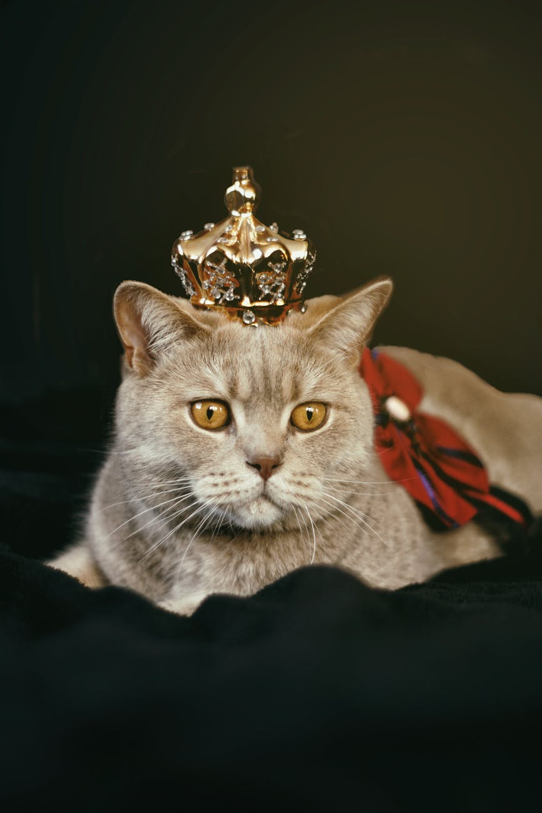
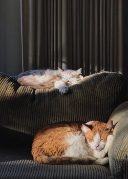

My name is Gonzalo. Creating this wepage and editing the code has been very fun. I will be writing about fruits and vegetables inside section one of this page..
Different Fruits
Below are some of the fruits I like to eat.
This unordered list holds fruit names.
Cantaloupe
Oranges
Cherries
Blueberries
Different Vegetables
Below are some vegetables I include in my diet.
This ordered list holds vegetable names.
Carrots
Lettuce
Green peas
Spinach
SECTION TWO
Why I Became Interested in Programming.
It was through exposure from friends that worked at tech companies that got me fascinated. I decided to do some research on the tech industry.
You can go to Google.com and find endless learning meaterial if you want to become a self thaught devloper, programmer and ethical hacker.
Some people prefer Yahoo.com as another search engine.
SECTION THREE
In this section I added an image of a cat and created a short cat related list.
Cat Breeds
tabby breed
persian breed
bengal breed
Russian blue breed


In this photo there are two cats laying on a couch while light shines on them. Image by Ivy Son
SECTION FOUR
How to Wash Your Hands
Wet hands
Pump liquid hand soap on your wet hands.
Rub all surface of youur hands together for 20 seconds.
Rinse off soap from your hands under running water.
SECTION FIVE
Tech Terms
Code editor:
An application that allows you to write and develop code.
Text editor:
A word proccessing program that you can use to type and edit plain text or rich text. You can also write certain programming languages and create webpages.